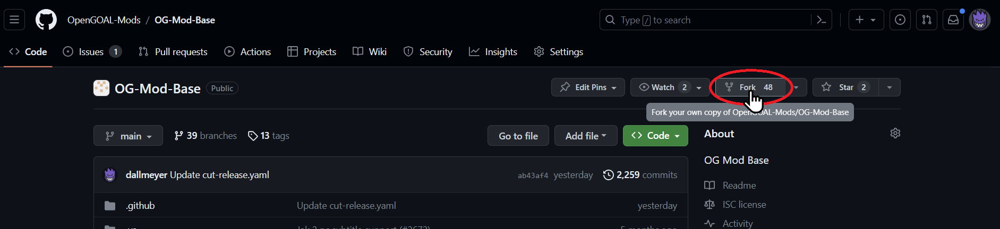
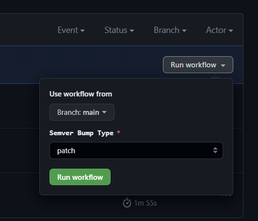

FAQ
For general questions about OpenGOAL, please see the official OpenGOAL FAQ.
Using the Mod Launcher
No, the mod launcher and the jak-project are both open source if you'd like to audit the codebase yourself. The mod launcher is a small Python program bundled into a Windows app for easy use. Each mod is effectively a standalone OpenGOAL installation, and so you may need to allow My antivirus software is warning me about the launcher / mods! Is this a virus?
extractor.exe and/or gk.exe within your antivirus program individually for each mod.
As long as you're running the "Launcher with autoupdater.exe" provided on the download page, the launcher will keep itself up-to-date. For mods, whenever you try to launch a mod it will check if there is an update available. If so, it will automatically download and install it - you can peek at the terminal console window to track the progress.How do I update the launcher / mods?
No, at the moment the launcher doesn't support this. You can manually install mods elsewhere though - to find the github repo for any mod, see the mod list here.Can I change the mod install location?
No, at the moment the mod launcher is only supported on Windows.Is Steamdeck / Linux / Mac supported?
Yes!
Can I apply a texture pack to a mod?
data folder, and check if you see a custom_assets folder inside
custom_assets folder, this is a newer mod:
texture_replacements folder within the custom_assets folder (some mods may already have this folder)jak1 (or jak2) folder within the texture_replacements folder (some mods may already have this folder)data/custom_assets/texture_replacements/jak1 folder (or the jak2 equivalent)custom_assets folder, this is an older mod:
texture_replacements folder within the data folder (some mods may already have this folder)data/texture_replacements folder
No, not easily, at least at the moment. Since each mod is a completely standalone copy of the jak-project, there's no easy way to guarantee changes are compatible with each other or an easy way to resolve conflicts. For example, how would you combine the FlutFlut Legacy and the Zoomer Legacy? You can't be simultaneously on FlutFlut and on the Zoomer. With that said, in theory someone could manually combine two or more mods (e.g. by using git to merge their codebases). This would then need to be added to the list as a standalone mod. In the future, there is a possibility OpenGOAL will have a native modding API, and mods might exist more like patches than entire standalone codebases. If we reach that point, it will be much more feasible to seamlessly combine mods.Can I use multiple mods together in combination?
Mod Creation
Yes - see the below links! In particular, Zed's videos are a great starting point as they show the development process in real-time. You're also welcome to join our Discord server and ask for help there!
I want to try making OpenGOAL mods, do you have any documentation or guides to help get me started?
Additionally, if you are curious and want to peek at the source code for any of the existing mods in the mod launcher, you can find each mod's Github repo listed in our mod launcher config file here.
The mod launcher expects to download mods as a Github release bundle of the If you're new to Github, sorry we won't walk you through that here - there are plenty of guides online that will do a better job than we can teaching you about git and Github. We recommend making a fork of our OG-Mod-Base project, as this comes with an easy workflow for creating release bundles. If you plan to make multiple mods, keep in mind you can only have one fork per personal account - to work around this you can create a Github organization for yourself and create your fork(s) under that.  From here, you'll want to commit and push your changes to this new repository. For texture packs, this would involve adding the Once your changes are pushed to Github and you're ready to create a release for people to play, you can head to the Actions tab on your repo, and look for the Cut Mod Release action. On the right side you can kick off this workflow, and it will bundle up the necessary files from your repo into a release. You can choose whether this new release you're creating should get a patch/minor/major version bump.  Once this workflow completes, you should see a new release version on the right side of the main page of your repo. At this point, your mod should be bundled and ready for us to add! Just reach out to barg034 or zedb0t on Discord with the name, description, and thumbnail image - we'll work with you to get it added to the mod list. Whenever you'd like to publish updates to your mod, simply push those changes to your Github repo, and kick off a new Cut Mod Release action. The mod launcher will always try to grab the latest release from your repo. Here's a brief example of the steps we took recently to help Funki Delire create a mod featuring their custom levels:
I made a texture pack / custom level / mod, how can I get it listed in the mod launcher?
jak-project, so in short: you'll need to get your creation hosted on a Github repository and create a release in the expected format.texture_replacements folder and your textures within it. For custom levels, this would (at a minimum) involve adding your level to the custom_levels folder.

Generally speaking, since OpenGOAL provides the source code for the game, the theoretical possibilities are endless. What's realistically possible is a limitation of how much time and effort people are willing to put in. If you're interested in trying to build something yourself, feel free to join our Discord server and we might be able to help guide you.Is it possible to do XYZ in a mod?